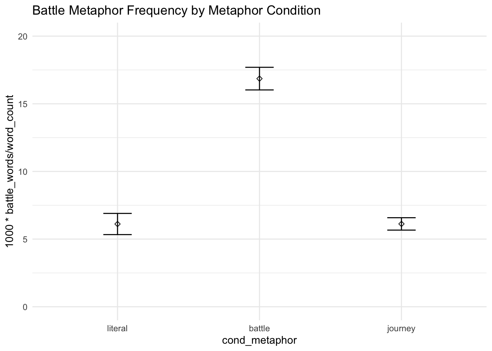
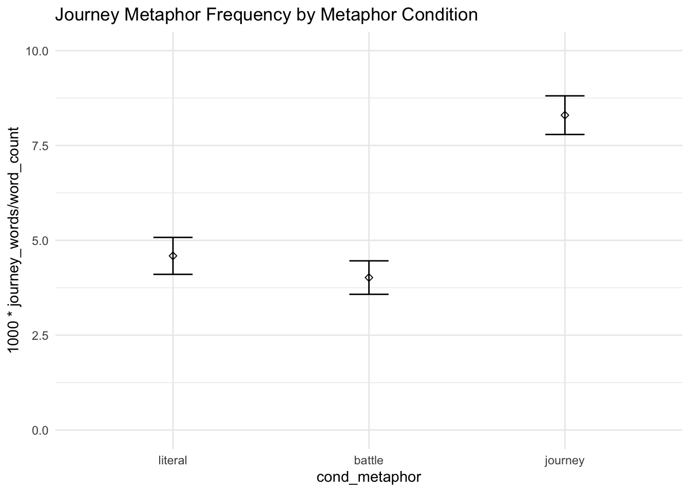
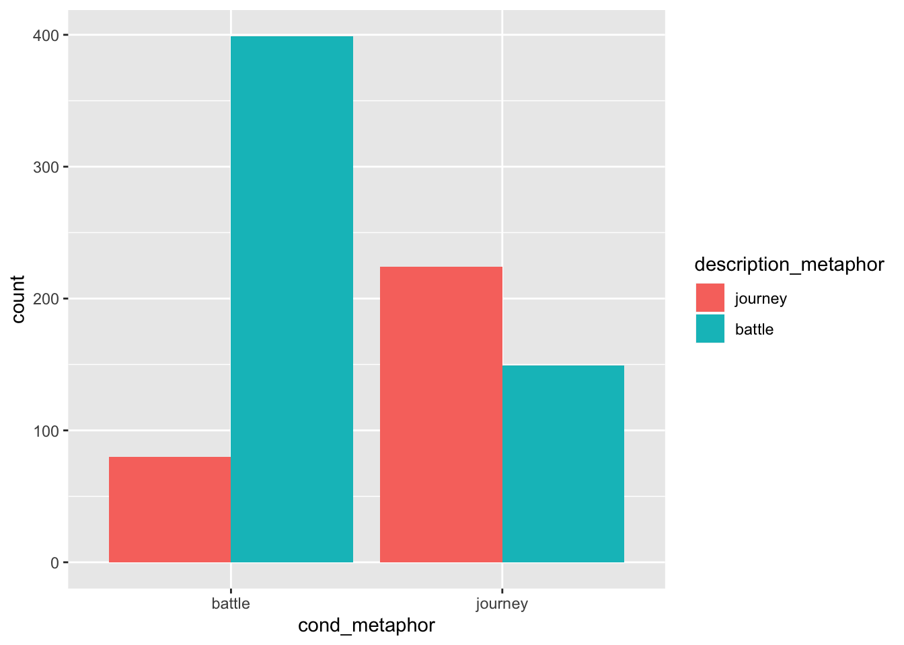
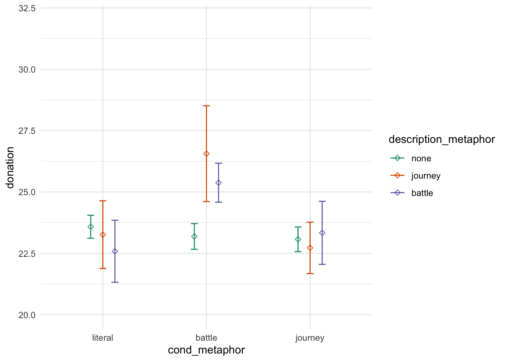

Chapter 6 Descriptions
6.0.1 Quality
H: Higher quality descriptions lead to more pronounced effects of metaphor
on = c("tf3xonytl4jagsno9cql",
"smh4v9rqeytrb2yegyqw",
"b0cfxvjb6q2vya1cesbo",
"3b9w0bh94du4phw3wsos",
"reqfg8cx246zoszmrnff",
"3dkdcw9ekafjqz1v2w87",
"hct0sxcek1473jxxe8fl",
"xznwx3jeunh9jk5lh787",
"f2rmnlfbsanlttcfne6y",
"fpyospteggoemb59nuxw",
"m77sun1swt96wjlejhj6",
"87swbk6cknu3hdbmapv5",
"8wvbwfbnuwpumphgu940",
"xz0dwsq3erfumzdk6g3u",
"6yv9fs9rw94r7q9eph9c",
"lzpwuq5kjk1clpq2lt16",
"2jzymuz60avswfz729e6",
"vqbjja5qhfyvdcvakwur",
"7srebzx2pfdv2yx03v05",
"tdv6duh9sarj5s60pwm3",
"z5brs0mevdumpjuevm8v",
"kt20270j5t571c8z3xn9",
"cccex8n929kjh1y8mzre",
"tn0jgbbqmhghfw196c61",
"xp86x9vm339usdvxlfza",
"t3lu8b4ftr1by3lpap4e",
"xyofqyp1nh9q97v9wfyr",
"lkbdt5nzgzmkhurkkwye",
"zphy1s3uahrw79lo6mgb",
"0w96jzbx6rdxxs1ennv1",
"4rd5bhz5mbns2md570oc",
"ahc5yd008ex82nru2km3",
"yzd7ffgsxonycgctlwga",
"yo8hsz0wgqzm509mght8",
"1dj947x3sc3yy2wuvvya",
"mxz5ekm89vlybuhn45mf",
"pbja5q8hatb1x8pznvb4",
"tc64drmbb8x3uyr99lab",
"ja3fc6jnmpma4hm93w63",
"g6jnvll7m4fxlu5nb2my",
"pwge07onacepsxu8ba4j",
"kghh5kbbucbp2mndl166",
"cd7f7jhhw8ktzobf5fg2",
"buhomawfdyuurlb0nnre",
"24g8fky5nr8myjgjv1au",
"5ca7r126ycutz4435shn",
"dy96zubatwjfjnoafvq7",
"o963w232hcuton7o0wwe",
"yrymka12ud48yor18fgs",
"165hlrnwg8zjg0kkd326",
"xzutvogrmy61h1uhmsms",
"vzrg2pv9yx73wdy1vrjf",
"wg0gstttpx8chpre3u4y",
"su4l0tfwd1bmt97epd8v",
"g45swcjf8fdr5g3o486h",
"50s8fq827n3j3xb2pge1",
"v8aauzyac07yh0dw57j5",
"99bujlc9qce15w9kkq3w",
"x3elx8ryobdby1qskvle",
"9qyfkvaqwdenrguloyck",
"fyrxw8fvway3odnpx7k7",
"1ta7ybxtkrz9ooc76cvc",
"0ajaoxsy3347gmp5cazv",
"34tqgyvfj9n2cb0y0jok",
"sum9001yhghvel368vlp",
"c4hw391phy51jro89k0j",
"6rfmwmzr79ozthsvraug",
"484fpe4p96clmbe7n0t8",
"qkfy72l6ejvbop9ancku",
"jzlusqash832fk2ex4k1",
"zb21gmjo80u9ek8rd8nw",
"x2qk2ah2h3e2r7qylde5",
"jqcf9p69pkyu7gskhtyr",
"bvrgr53v0g5nlqz0xb6g",
"sp9byj7fyme5tt5om2ug",
"kg9hm5p8q9e27x6o15y4",
"71h2qmqd9rygbn0t61lz",
"fdf356gfqc40gbbuavtc")
off = c(
"hhw1u9my0wb4mmloq5y1",
"qfuprcslsqhvsj8m0204",
"om5tgdnye66bl2op1gn9",
"laol6h7mwr9vo7ck33pa",
"x7shu9mtsmpkepgvw8x0",
"wffsbmhstf2k0ttl0g62",
"yy5wq00249pxqchykw10",
"6h4czt8gx5la9zm1fkdk",
"0my60drm8ju1mw1c6aza",
"3o12tk6lf73ykhpwop0o",
"7hmwgza7hkmrn7zhq2n6",
"aqv3l25op1er93152tl1",
"wl17338rdug8ga22xeo6",
"naqlakmus7gzy4y962ge",
"fzbdpsr2n7o8q1pgk8h2",
"hzp8n2szsjvw3j3pz6dd",
"va5md1g5j1cmw5pb8v78",
"6dt1dlktrcgsb68yeyko"
)
trials[trials$ppt %in% on, "on_topic"] = 1
trials[trials$ppt %in% off, "on_topic"] = 0m1 = lm(update(base.formula, donation ~ .), data = filter(trials, on_topic == 1))
m2 = lm(update(base.formula, donation ~ . + on_topic), data = filter(trials, on_topic == 1))
summary(m2)##
## Call:
## lm(formula = update(base.formula, donation ~ . + on_topic), data = filter(trials,
## on_topic == 1))
##
## Residuals:
## Min 1Q Median 3Q Max
## -25.195 -8.798 0.000 10.593 34.604
##
## Coefficients: (1 not defined because of singularities)
## Estimate Std. Error t value Pr(>|t|)
## (Intercept) 13.3045 10.4163 1.277 0.2070
## cond_sexfemale 2.0184 4.8056 0.420 0.6762
## self_cancerY 16.5048 12.7703 1.292 0.2017
## ff_cancerY -5.0225 4.7000 -1.069 0.2900
## ff_cancerOO -8.3786 17.9919 -0.466 0.6433
## genderF -0.6889 4.1850 -0.165 0.8699
## genderNB -2.3389 17.6956 -0.132 0.8953
## educationA 13.3765 8.7490 1.529 0.1321
## educationB 5.8496 6.0772 0.963 0.3401
## educationM 10.0327 6.9371 1.446 0.1539
## educationP 44.4054 19.1625 2.317 0.0243 *
## educationD 16.0046 16.7335 0.956 0.3431
## socioeconomic10-25k 6.7491 8.3375 0.809 0.4218
## socioeconomic25-50k 6.7738 7.5784 0.894 0.3754
## socioeconomic50-75k 10.1761 8.0094 1.271 0.2093
## socioeconomic75-100k -0.7693 9.7585 -0.079 0.9375
## socioeconomic100-150k 10.0685 13.0581 0.771 0.4440
## socioeconomic>150k 32.2743 16.6867 1.934 0.0583 .
## socioeconomicOO 0.2886 12.3383 0.023 0.9814
## past_donations.z 4.4055 10.9138 0.404 0.6881
## age.z -2.2729 5.2310 -0.434 0.6657
## on_topic NA NA NA NA
## ---
## Signif. codes: 0 '***' 0.001 '**' 0.01 '*' 0.05 '.' 0.1 ' ' 1
##
## Residual standard error: 15.96 on 54 degrees of freedom
## Multiple R-squared: 0.2679, Adjusted R-squared: -0.003193
## F-statistic: 0.9882 on 20 and 54 DF, p-value: 0.48996.0.2 Metaphor
Define some keywords under two main families and one exploratory family of metaphor (only lemmas).
BATTLE_PHRASES <- c('fight', 'fought', 'battling', 'battle', 'war', 'beat', 'enemy', 'defeat', 'win', 'combat')
JOURNEY_PHRASES <- c('path', 'journey', 'road', 'rollercoaster', 'going through')
# FORCE_PHRASES <- c('forced', 'force', 'lava', 'flood', 'volcano', 'wave', 'drown', 'storm', 'disaster', 'river')Run a search over descriptions for the keywords and count their occurances.
search_description_for_battle <- function(row) {
return(sum(sapply(BATTLE_PHRASES, function (k) grepl(k, tolower(row), fixed = T))))
}
search_description_for_journey <- function(row) {
return(sum(sapply(JOURNEY_PHRASES, function (k) grepl(k, tolower(row), fixed = T))))
}
# search_description_for_force <- function(row) {
# return(sum(sapply(FORCE_PHRASES, function (k) grepl(k, tolower(row), fixed = T))))
# }trials$battle_words = unname(sapply(trials$description, search_description_for_battle))
trials$journey_words = unname(sapply(trials$description, search_description_for_journey))
# trials$force_words = unname(sapply(trials$description, search_description_for_force))
trials$description_metaphor =
case_when(trials$battle_words > 0 & trials$journey_words == 0 ~ "battle",
trials$journey_words > 0 & trials$battle_words == 0 ~ "journey",
trials$battle_words > 0 & trials$journey_words > 0 ~ "mixed",
trials$battle_words == 0 & trials$journey_words == 0 ~ "none")
trials$description_metaphor = factor(trials$description_metaphor, levels = c("none", "mixed", "journey", "battle"))trials$word_count = sapply(trials$description, function(t) str_count(t, " ")+1)
sum(trials$battle_words) / sum(trials$word_count) * 1000## [1] 9.486639sum(trials$journey_words) / sum(trials$word_count) * 1000## [1] 5.735666Approxiamtely 9.5 battle metaphors per 1,000 words and 2.9 journey metaphors per 1,000 words overall.
trials %>%
ggplot(aes(cond_metaphor, 1000 * battle_words / word_count)) + itheme +
geom_errorbars +
coord_cartesian(ylim = c(0, 20)) +
labs(title = "Battle Metaphor Frequency by Metaphor Condition")
trials %>%
ggplot(aes(cond_metaphor, 1000 * journey_words / word_count)) + itheme +
geom_errorbars +
coord_cartesian(ylim = c(0, 10)) +
labs(title = "Journey Metaphor Frequency by Metaphor Condition")
round(100*mean(trials$description_metaphor == "battle"), 2)## [1] 15.82round(100*mean(trials$description_metaphor == "journey"), 2)## [1] 9.8round(100*mean(trials$description_metaphor == "mixed"), 2)## [1] 2.87round(100*mean(trials$description_metaphor == "none"), 2)## [1] 71.52About 24% of participants preserved a metaphor: 17% preserved a battle metaphor, 5% preserved a journey metaphor, and 1.6% preserved both metaphors.
6.0.2.1 Effect of Metaphor Condition on preserved Metaphor in Description
# g = trials %>%
# filter(description_metaphor %in% c("battle", "journey", "mixed")) %>%
# group_by( cond_metaphor, description_metaphor) %>%
# summarize(prop = n() / nrow(trials)) %>%
# ggplot(aes(cond_metaphor, y = prop, group = description_metaphor, color = description_metaphor)) + ptheme +
# geom_point() +
# geom_line() +
# scale_y_continuous(labels = scales::percent) +
# scale_x_discrete(labels = c("literal" = "Literal", "battle" = "Battle", "journey" = "Journey")) +
# labs(title = "Proportion of Participants with Preserved Metaphor by Condition",
# x = "Metaphor Condition",
# y = "% of Participants") +
# scale_color_brewer(palette = "Set1", name = "Metaphors\nPreserved", labels = c("mixed" = "Mixed", "journey" = "Journey", "battle" = "Battle")) +
# coord_cartesian(ylim = c(0.0, 0.1))
#
# g
# ggsave("preserved_metaphor.png", g, width = pwidth, height = pheight, bg = "transparent")We analyzed the free-response answers the participants completed in response to being asked to explain the patient’s situation to a friend. We were interested in whether the metaphor in the passage predicts the presence of metaphors in the description. We will model this with a logistic regression, accounting for the covariates included in the primary hypothesis model.
trials$preserved_metaphor = trials$description_metaphor != "none"
model_metaphor_preserve_base = glm(update(base.formula, preserved_metaphor ~ .),
data = trials,
family = "binomial")
model_metaphor_preserve_full = glm(update(base.formula, preserved_metaphor ~ . + cond_metaphor),
data = trials,
family = "binomial")
compare_lm(model_metaphor_preserve_base, model_metaphor_preserve_full)## Analysis of Deviance Table
##
## Model 1: preserved_metaphor ~ cond_sex + self_cancer + ff_cancer + gender +
## education + socioeconomic + past_donations.z + age.z
## Model 2: preserved_metaphor ~ cond_sex + self_cancer + ff_cancer + gender +
## education + socioeconomic + past_donations.z + age.z + cond_metaphor
## Resid. Df Resid. Dev Df Deviance Pr(>Chi)
## 1 4477 5295.0
## 2 4475 5220.3 2 74.702 < 2.2e-16 ***
## ---
## Signif. codes: 0 '***' 0.001 '**' 0.01 '*' 0.05 '.' 0.1 ' ' 1
## Chisq Stat: 74.702
## NULL
## MODEL INFO:
## Observations: 4502
## Dependent Variable: preserved_metaphor
## Type: Generalized linear model
## Family: binomial
## Link function: logit
##
## MODEL FIT:
## χ²(26) = 158.630, p = 0.000
## Pseudo-R² (Cragg-Uhler) = 0.050
## Pseudo-R² (McFadden) = 0.029
## AIC = 5274.315, BIC = 5447.447
##
## Standard errors: MLE
## -----------------------------------------------------------------------
## Est. 2.5% 97.5% z val. p
## --------------------------- -------- -------- -------- -------- -------
## (Intercept) -2.635 -3.867 -1.404 -4.194 0.000
## cond_sexfemale 0.110 -0.022 0.243 1.630 0.103
## self_cancerY -0.139 -0.462 0.183 -0.845 0.398
## self_cancerOO -0.674 -1.476 0.129 -1.645 0.100
## ff_cancerY 0.272 0.125 0.418 3.632 0.000
## ff_cancerOO 0.307 -0.201 0.816 1.184 0.237
## genderF 0.125 -0.010 0.259 1.809 0.070
## genderNB -0.639 -1.726 0.448 -1.152 0.249
## genderOO 0.595 -0.680 1.871 0.915 0.360
## educationHS 1.190 -0.034 2.413 1.906 0.057
## educationA 1.285 0.054 2.517 2.046 0.041
## educationB 0.939 -0.283 2.162 1.506 0.132
## educationM 0.865 -0.369 2.098 1.374 0.169
## educationP 0.509 -0.792 1.811 0.767 0.443
## educationD 0.675 -0.645 1.995 1.002 0.316
## educationOO 0.516 -1.130 2.162 0.615 0.539
## socioeconomic10-25k -0.046 -0.297 0.206 -0.357 0.721
## socioeconomic25-50k 0.036 -0.192 0.264 0.309 0.758
## socioeconomic50-75k -0.021 -0.265 0.224 -0.166 0.868
## socioeconomic75-100k 0.114 -0.164 0.391 0.803 0.422
## socioeconomic100-150k -0.031 -0.356 0.294 -0.186 0.852
## socioeconomic>150k 0.332 -0.102 0.766 1.498 0.134
## socioeconomicOO 0.366 -0.070 0.801 1.646 0.100
## past_donations.z 0.044 -0.086 0.174 0.661 0.509
## age.z 0.226 0.089 0.362 3.244 0.001
## cond_metaphorbattle 0.714 0.550 0.877 8.536 0.000
## cond_metaphorjourney 0.406 0.238 0.574 4.736 0.000
## -----------------------------------------------------------------------In both metaphor conditions, we see a significant increase in the likelihood that the participant will go on to use some sort of metaphor.
model_metaphor_preserve_base = glm(update(base.formula, I(description_metaphor == "journey") ~ .),
data = trials %>%
filter(cond_metaphor %in% c("journey", "battle"),
description_metaphor %in% c("journey", "battle")),
family = "binomial")
model_metaphor_preserve_full = glm(update(base.formula, I(description_metaphor == "journey") ~ . + cond_metaphor),
data = trials %>%
filter(cond_metaphor %in% c("journey", "battle"),
description_metaphor %in% c("journey", "battle")),
family = "binomial")
compare_lm(model_metaphor_preserve_base, model_metaphor_preserve_full)## Analysis of Deviance Table
##
## Model 1: I(description_metaphor == "journey") ~ cond_sex + self_cancer +
## ff_cancer + gender + education + socioeconomic + past_donations.z +
## age.z
## Model 2: I(description_metaphor == "journey") ~ cond_sex + self_cancer +
## ff_cancer + gender + education + socioeconomic + past_donations.z +
## age.z + cond_metaphor
## Resid. Df Resid. Dev Df Deviance Pr(>Chi)
## 1 827 1073.59
## 2 826 892.28 1 181.31 < 2.2e-16 ***
## ---
## Signif. codes: 0 '***' 0.001 '**' 0.01 '*' 0.05 '.' 0.1 ' ' 1
## Chisq Stat: 181.314
## NULL
## MODEL INFO:
## Observations: 852
## Dependent Variable: I(description_metaphor == "journey")
## Type: Generalized linear model
## Family: binomial
## Link function: logit
##
## MODEL FIT:
## χ²(25) = 217.977, p = 0.000
## Pseudo-R² (Cragg-Uhler) = 0.310
## Pseudo-R² (McFadden) = 0.196
## AIC = 944.280, BIC = 1067.717
##
## Standard errors: MLE
## -----------------------------------------------------------------------------
## Est. 2.5% 97.5% z val. p
## --------------------------- --------- ----------- ---------- -------- -------
## (Intercept) -15.161 -1201.625 1171.303 -0.025 0.980
## cond_sexfemale -0.181 -0.508 0.146 -1.087 0.277
## self_cancerY 0.253 -0.527 1.033 0.636 0.525
## self_cancerOO -1.174 -3.552 1.204 -0.968 0.333
## ff_cancerY -0.017 -0.389 0.355 -0.089 0.929
## ff_cancerOO -0.291 -1.652 1.071 -0.418 0.676
## genderF 0.421 0.088 0.754 2.480 0.013
## genderNB 0.524 -2.087 3.136 0.394 0.694
## genderOO 0.747 -1.821 3.315 0.570 0.568
## educationHS 12.908 -1173.555 1199.372 0.021 0.983
## educationA 12.799 -1173.664 1199.263 0.021 0.983
## educationB 12.526 -1173.937 1198.990 0.021 0.983
## educationM 12.423 -1174.041 1198.886 0.021 0.984
## educationP 12.099 -1174.365 1198.563 0.020 0.984
## educationD 11.352 -1175.113 1197.817 0.019 0.985
## educationOO -1.218 -1642.061 1639.625 -0.001 0.999
## socioeconomic10-25k 0.509 -0.136 1.155 1.547 0.122
## socioeconomic25-50k 1.092 0.500 1.684 3.613 0.000
## socioeconomic50-75k 1.107 0.475 1.739 3.432 0.001
## socioeconomic75-100k 0.781 0.063 1.500 2.130 0.033
## socioeconomic100-150k 0.127 -0.765 1.020 0.279 0.780
## socioeconomic>150k 0.888 -0.149 1.925 1.679 0.093
## socioeconomicOO 0.891 -0.103 1.885 1.757 0.079
## past_donations.z -0.054 -0.349 0.240 -0.361 0.718
## age.z -0.110 -0.459 0.238 -0.621 0.534
## cond_metaphorjourney 2.131 1.795 2.467 12.442 0.000
## -----------------------------------------------------------------------------In both metaphor conditions, we see a significant increase in the likelihood that the participant will go on to use a journey metaphor.
trials %>%
filter(cond_metaphor %in% c("journey", "battle"),
description_metaphor %in% c("journey", "battle")) %>%
ggplot() +
geom_bar(aes(cond_metaphor, fill = description_metaphor), position = "dodge")
model_metaphor_preserve_base = glm(update(base.formula, I(description_metaphor == "battle") ~ .),
data = trials %>%
filter(cond_metaphor %in% c("journey", "battle"),
description_metaphor %in% c("journey", "battle")),
family = "binomial")
model_metaphor_preserve_full = glm(update(base.formula, I(description_metaphor == "battle") ~ . + cond_metaphor),
data = trials %>%
filter(cond_metaphor %in% c("journey", "battle"),
description_metaphor %in% c("journey", "battle")),
family = "binomial")
compare_lm(model_metaphor_preserve_base, model_metaphor_preserve_full)## Analysis of Deviance Table
##
## Model 1: I(description_metaphor == "battle") ~ cond_sex + self_cancer +
## ff_cancer + gender + education + socioeconomic + past_donations.z +
## age.z
## Model 2: I(description_metaphor == "battle") ~ cond_sex + self_cancer +
## ff_cancer + gender + education + socioeconomic + past_donations.z +
## age.z + cond_metaphor
## Resid. Df Resid. Dev Df Deviance Pr(>Chi)
## 1 827 1073.59
## 2 826 892.28 1 181.31 < 2.2e-16 ***
## ---
## Signif. codes: 0 '***' 0.001 '**' 0.01 '*' 0.05 '.' 0.1 ' ' 1
## Chisq Stat: 181.314
## NULL
## MODEL INFO:
## Observations: 852
## Dependent Variable: I(description_metaphor == "battle")
## Type: Generalized linear model
## Family: binomial
## Link function: logit
##
## MODEL FIT:
## χ²(25) = 217.977, p = 0.000
## Pseudo-R² (Cragg-Uhler) = 0.310
## Pseudo-R² (McFadden) = 0.196
## AIC = 944.280, BIC = 1067.717
##
## Standard errors: MLE
## ------------------------------------------------------------------------------
## Est. 2.5% 97.5% z val. p
## --------------------------- --------- ----------- ---------- --------- -------
## (Intercept) 15.161 -1171.303 1201.625 0.025 0.980
## cond_sexfemale 0.181 -0.146 0.508 1.087 0.277
## self_cancerY -0.253 -1.033 0.527 -0.636 0.525
## self_cancerOO 1.174 -1.204 3.552 0.968 0.333
## ff_cancerY 0.017 -0.355 0.389 0.089 0.929
## ff_cancerOO 0.291 -1.071 1.652 0.418 0.676
## genderF -0.421 -0.754 -0.088 -2.480 0.013
## genderNB -0.524 -3.136 2.087 -0.394 0.694
## genderOO -0.747 -3.315 1.821 -0.570 0.568
## educationHS -12.908 -1199.372 1173.555 -0.021 0.983
## educationA -12.799 -1199.263 1173.664 -0.021 0.983
## educationB -12.526 -1198.990 1173.937 -0.021 0.983
## educationM -12.423 -1198.886 1174.041 -0.021 0.984
## educationP -12.099 -1198.563 1174.365 -0.020 0.984
## educationD -11.352 -1197.817 1175.113 -0.019 0.985
## educationOO 1.218 -1639.625 1642.061 0.001 0.999
## socioeconomic10-25k -0.509 -1.155 0.136 -1.547 0.122
## socioeconomic25-50k -1.092 -1.684 -0.500 -3.613 0.000
## socioeconomic50-75k -1.107 -1.739 -0.475 -3.432 0.001
## socioeconomic75-100k -0.781 -1.500 -0.063 -2.130 0.033
## socioeconomic100-150k -0.127 -1.020 0.765 -0.279 0.780
## socioeconomic>150k -0.888 -1.925 0.149 -1.679 0.093
## socioeconomicOO -0.891 -1.885 0.103 -1.757 0.079
## past_donations.z 0.054 -0.240 0.349 0.361 0.718
## age.z 0.110 -0.238 0.459 0.621 0.534
## cond_metaphorjourney -2.131 -2.467 -1.795 -12.442 0.000
## ------------------------------------------------------------------------------In the battle metaphor condition, we see a significant increase in the likelihood that the participant will go on to use a battle metaphor. This increase does not exist for participants who were exposed to journey metaphors.
6.0.2.2 Effect of Preserved Metaphor on Donation Behavior
Additionally, we are interested in knowing whether preserved metaphor usage in responses predicts a main effect of donation amount. We will model this with an ordinary linear regression model, accounting for the same covariates as the other models.
model_preserved_base = lm(update(base.formula, donation ~ .), data = trials)
model_preserved_full = lm(update(base.formula, donation ~ . + preserved_metaphor), data = trials)
compare_lm(model_preserved_base, model_preserved_full)## Analysis of Variance Table
##
## Model 1: donation ~ cond_sex + self_cancer + ff_cancer + gender + education +
## socioeconomic + past_donations.z + age.z
## Model 2: donation ~ cond_sex + self_cancer + ff_cancer + gender + education +
## socioeconomic + past_donations.z + age.z + preserved_metaphor
## Res.Df RSS Df Sum of Sq Pr(>Chi)
## 1 4477 1145461
## 2 4476 1144827 1 634.47 0.1153
## Chisq Stat: 2.494
## NULL6.0.2.3 Interaction of Preserved Metaphor on Donation Behavior
print_crosstabs(ftable(trials$cond_metaphor, trials$description_metaphor))## none mixed journey battle
##
## literal 1206 24 137 164
## battle 955 49 80 399
## journey 1059 56 224 149
##
## none mixed journey battle
##
## literal 0.268 0.005 0.030 0.036
## battle 0.212 0.011 0.018 0.089
## journey 0.235 0.012 0.050 0.033trials %>%
filter(description_metaphor != "mixed") %>%
ggplot(aes(cond_metaphor, donation, color = description_metaphor)) + itheme +
geom_errorbars +
coord_cartesian(ylim = c(20, 32))
NH: Donation amounts do not differ between participants who preserve the metaphor they were exposed to and those who did not preserve any metaphor.
model_preserved_base = lm(update(base.formula, donation ~ . + cond_metaphor),
data = trials) #filter(trials, description_metaphor != "none"))
model_preserved_mid = lm(update(base.formula, donation ~ . + cond_metaphor + description_metaphor),
data = trials) #filter(trials, description_metaphor != "none"))
model_preserved_full = lm(update(base.formula, donation ~ . + cond_metaphor * description_metaphor),
data = trials) #filter(trials, description_metaphor != "none"))
compare_lm(model_preserved_base, model_preserved_mid)## Analysis of Variance Table
##
## Model 1: donation ~ cond_sex + self_cancer + ff_cancer + gender + education +
## socioeconomic + past_donations.z + age.z + cond_metaphor
## Model 2: donation ~ cond_sex + self_cancer + ff_cancer + gender + education +
## socioeconomic + past_donations.z + age.z + cond_metaphor +
## description_metaphor
## Res.Df RSS Df Sum of Sq Pr(>Chi)
## 1 4475 1144489
## 2 4472 1143837 3 651.94 0.4665
## Chisq Stat: 2.565
## NULLcompare_lm(model_preserved_mid, model_preserved_full)## Analysis of Variance Table
##
## Model 1: donation ~ cond_sex + self_cancer + ff_cancer + gender + education +
## socioeconomic + past_donations.z + age.z + cond_metaphor +
## description_metaphor
## Model 2: donation ~ cond_sex + self_cancer + ff_cancer + gender + education +
## socioeconomic + past_donations.z + age.z + cond_metaphor +
## description_metaphor + cond_metaphor:description_metaphor
## Res.Df RSS Df Sum of Sq Pr(>Chi)
## 1 4472 1143837
## 2 4466 1141368 6 2468.5 0.1398
## Chisq Stat: 9.726
## NULLmodel_urgent_base = lm(update(base.formula, urgent ~ .),
data = filter(trials, description_metaphor != "none"))
model_urgent_full = lm(update(base.formula, urgent ~ . + I(description_metaphor == "battle")),
data = filter(trials, description_metaphor != "none"))
compare_lm(model_urgent_base, model_urgent_full)## Analysis of Variance Table
##
## Model 1: urgent ~ cond_sex + self_cancer + ff_cancer + gender + education +
## socioeconomic + past_donations.z + age.z
## Model 2: urgent ~ cond_sex + self_cancer + ff_cancer + gender + education +
## socioeconomic + past_donations.z + age.z + I(description_metaphor ==
## "battle")
## Res.Df RSS Df Sum of Sq Pr(>Chi)
## 1 1257 1976.1
## 2 1256 1957.2 1 18.918 0.0004934 ***
## ---
## Signif. codes: 0 '***' 0.001 '**' 0.01 '*' 0.05 '.' 0.1 ' ' 1
## Chisq Stat: 12.332
## NULL
## MODEL INFO:
## Observations: 1282
## Dependent Variable: urgent
## Type: OLS linear regression
##
## MODEL FIT:
## F(25,1256) = 1.497, p = 0.055
## R² = 0.029
## Adj. R² = 0.010
##
## Standard errors: OLS
## -------------------------------------------------------------------------
## Est. 2.5% 97.5% t val. p
## ----------------------------- -------- -------- -------- -------- -------
## (Intercept) 5.922 4.476 7.368 8.035 0.000
## cond_sexfemale -0.104 -0.243 0.034 -1.477 0.140
## self_cancerY 0.029 -0.308 0.365 0.166 0.868
## self_cancerOO -0.020 -0.954 0.913 -0.042 0.966
## ff_cancerY 0.023 -0.134 0.180 0.290 0.772
## ff_cancerOO -0.190 -0.743 0.363 -0.675 0.500
## genderF -0.060 -0.202 0.082 -0.832 0.406
## genderNB -0.216 -1.458 1.026 -0.341 0.733
## genderOO 0.282 -0.854 1.418 0.488 0.626
## educationHS -1.230 -2.664 0.205 -1.682 0.093
## educationA -1.294 -2.734 0.146 -1.763 0.078
## educationB -1.415 -2.846 0.016 -1.940 0.053
## educationM -1.522 -2.965 -0.079 -2.069 0.039
## educationP -1.611 -3.125 -0.097 -2.088 0.037
## educationD -1.348 -2.877 0.181 -1.730 0.084
## educationOO -1.336 -3.157 0.486 -1.439 0.150
## socioeconomic10-25k 0.152 -0.113 0.416 1.125 0.261
## socioeconomic25-50k 0.131 -0.106 0.368 1.085 0.278
## socioeconomic50-75k 0.210 -0.047 0.467 1.604 0.109
## socioeconomic75-100k 0.049 -0.240 0.337 0.332 0.740
## socioeconomic100-150k -0.136 -0.481 0.210 -0.770 0.442
## socioeconomic>150k -0.015 -0.460 0.429 -0.067 0.946
## socioeconomicOO -0.192 -0.620 0.236 -0.878 0.380
## past_donations.z -0.011 -0.152 0.131 -0.148 0.882
## age.z 0.065 -0.081 0.211 0.874 0.382
## I(description_metaphor == 0.247 0.108 0.386 3.484 0.001
## "battle")TRUE
## -------------------------------------------------------------------------